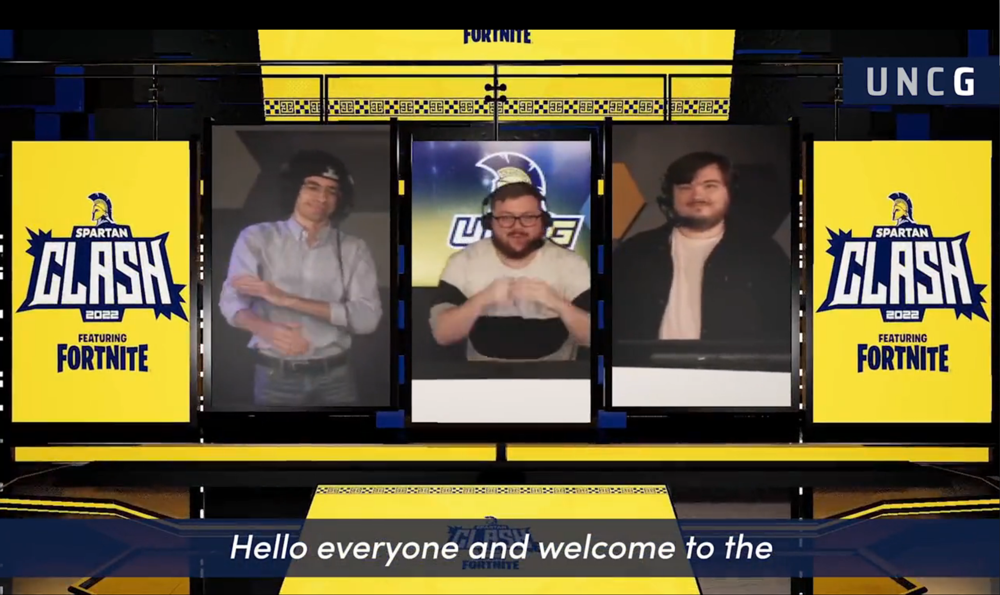

Unreal Engine is becoming more and more popular which really lead me to wanting to work with it. First I started using it for traditional 3d art but I quickly discovered much more of it's power. I wanted to be able to put myself into a Virtual world.
EFVS is a project, lead by me, that is designed for colleges to have access to a Virtual studio to use for their own productions in esports. This studio supports being able to create custom themes that can be saved and easily swithed to during live broadcasts. This allows for doing streams with different amounts of Hosts/Analysts/Casters and swithing those numbers live as well as switching branding mid stream.

I primarily worked on the function of the studio in the project. Using a data table I created the feature to add custom "skins" to the studio allowing different use cases and branding that can be easily switched through using the controller. I also made the camera moves used to navigate through the studio along with the HUD to control and view the camera. Although I didn't model much in the studio I did help in adding materials onto the models.
UNC Greensboro hosted a LAN Fortnite event which is an in person esports competion where high school and college students competed for prizing. For the broadcast streamed on UNCG's esports Twitch channel, they wanted to use this project. I quickly created a custom version of the studio for the event as well as operated the project during the broadcast
